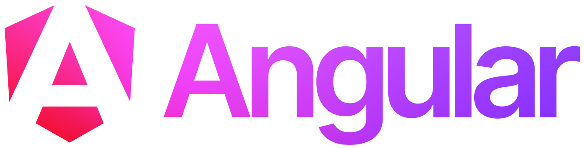

Web Dynamique côté Client
Angular
Dans ce chapitre
- Les objets en JavaScript
- La programmation orientée objet
- Objets standards
- Angular
- AJAX
Angular
- Framework web pour la création d'application côté client
- Single-Page Application (SPA) : une page web unique pour toute l’application
- TypeScript : superset de JavaScript
- Node.js : environnement pour le développement et le déploiement
- Angular CLI : outil en ligne de commande pour créer et gérer les projets
- Résultat final : une application web HTML/CSS/JS qui tourne dans un navigateur

Angular
Historique
- 2010 : AngularJS - première version par Google en JS
Objectif : créer des app ”client riche” en découplant le front de la logique metier - 2012 : AngularJS v1.0.0 - première v1 avec syntaxe JS très complexe
- 2016 : Angular 2.0 - v2.0 de AngularJS mais réécrite entièrement en TS.
Changement de nom pour éviter les confusions - 2017-2020 : Angular 4 à 11 - 2 versions par an (mai et nov.), toutes mises à jour pendant 18 mois.
- 2021 : Fin de AngularJS - Google arrête le développement et le support
- 2025 : Angular 20 et 21
TypeScript
- Superset de JavaScript développé par Microsoft
- Ajoute des fonctionnalités avancées à JavaScript :
- Typage statique (types explicites)
- Classes abstraites et interfaces
- Modules et espaces de noms
- Annotations
- Génériques
- Compilé (transpilé) en JavaScript standard pour être exécuté dans les navigateurs
- Améliore la maintenabilité et la robustesse du code
TypeScript
Système de typage
- Les variables ont un type fixe
- Pendant la compilation en JS, les types sont vérifiés pour détecter les incompatibilités
- Possibilité de spécifier des types explicites pour les variables, fonctions, etc.
let helloWorld = "Hello World";
// ou
let helloWorld : string = "Hello World";
helloWorld = 42; // Erreur de compilation : Type 'number' is not assignable to type 'string'
class User {
name: string;
id: number;
constructor(name: string, id: number) {
this.name = name;
this.id = id;
}
}
TypeScript
Système de typage
- TS s'appuit sur le fonctionnement de JS pour déduire automatiquement les types primitifs
- Pour les objets, TS utilise un système de typage structurel (duck typing)
- Type déterminé par sa structure (propriétés et types) et non par un type explicite (e.g. une classe)
- 2 objets sont du même type s'ils ont les mêmes propriétés, indépendamment de leur origine
const obj = { width: 10, height: 15 };
const area = obj.width * obj.heigth;
// Erreur de compilation: Property 'heigth' does not exist on type '{ width: number; height: number; }'.
// Did you mean 'height'?
TypeScript
Système de typage
- Pour définir un type d'objets de façon explicite: interfaces
- Une interface définit un contrat que les objets doivent respecter
interface User {
name: string;
id: number;
}
const user1: User = { name: "Alice", id: 1 };
const user2: User = { name: "Bob" }; // Erreur de compilation: Property 'id' is missing in
//type '{ name: string; }' but required in type 'User'.
class UserAccount {
name: string;
id: number;
constructor(name: string, id: number) {
this.name = name;
this.id = id;
}
}
const user: User = new UserAccount("Murphy", 1); // ok